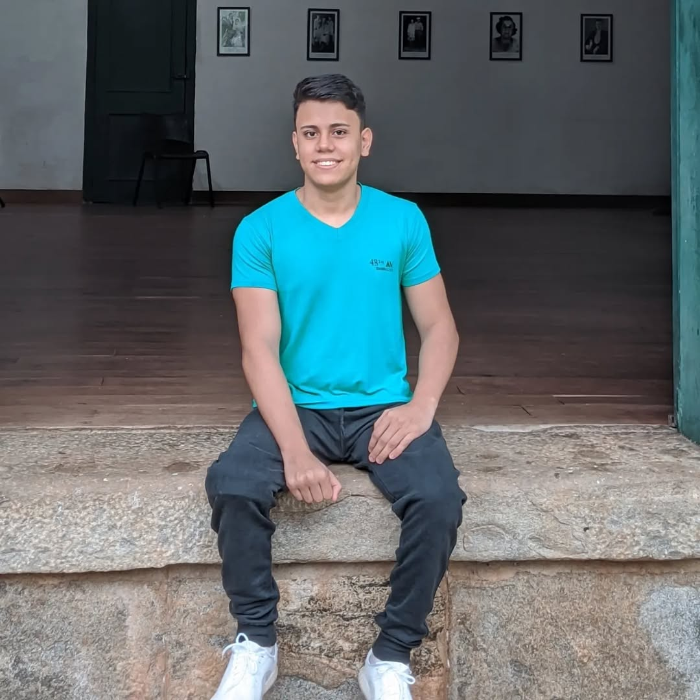
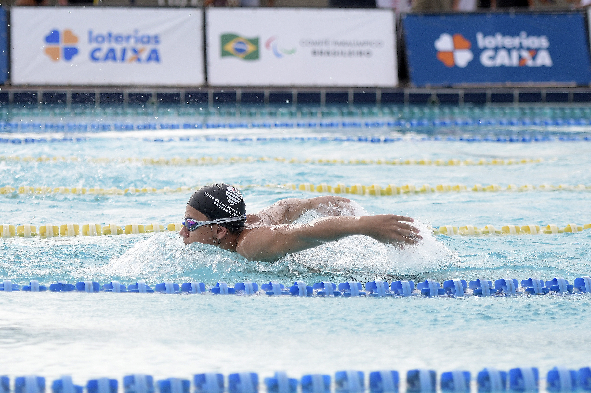

Sobre Mim
Olá! Meu nome é Matheus Távora, tenho 21 anos. Sou apaixonado desde a infância por computadores, tecnologia e jogos. Busco constantemente superar limites e aplicar a mesma dedicação que tenho em todos os meus projetos pessoais e profissionais.
Trajetória no Esporte
Atuo profissionalmente como nadador paralímpico, uma jornada que me ensinou sobre disciplina, resiliência e foco em resultados. Essa experiência moldou quem eu sou e a forma como encaro novos desafios, sempre com determinação e vontade de vencer.
Hobbies e Interesses
Meus interesses são variados, passando por tecnologia, onde procuro estar o mais atualizado nas novidades e tendências, teologia, que me traz conhecimentos importantes e essenciais para mim, onde as comunico e compartilho em ambiente religioso. E claro, o acompanhamento de diversos outros esportes.